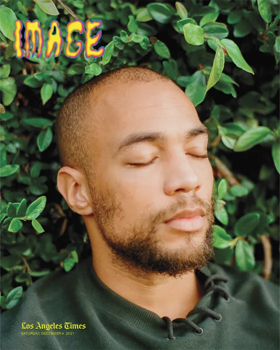

Soy Wilson Criollo, un estudiante de desarrollo web con más de 2 años de experiencia en la creación de soluciones digitales innovadoras. Mi objetivo es ayudar a negocios y emprendedores a establecer una sólida presencia en línea que genere resultados reales.
Desde mi inicio en el mundo del desarrollo web, he tenido la oportunidad de trabajar con empresas de diferentes tamaños, desde startups hasta medianas empresas. Esto me ha permitido desarrollar una comprensión profunda de los diferentes desafíos que enfrenta cada negocio en el ambiente digital.
Creo que un buen sitio web no es solo sobre la estética, sino también sobre la funcionalidad, la usabilidad y los resultados. Por eso, cada proyecto que realizo está enfocado en crear experiencias excepcionales para los usuarios finales.

Lideré proyectos web para clientes corporativos, implementando soluciones completas desde el diseño hasta el desarrollo y despliegue. Optimicé sitios web logrando mejorar el posicionamiento SEO de clientes hasta las primeras posiciones de Google.
Desarrollé aplicaciones web completas utilizando React.js en el frontend y Node.js en el backend. Trabajé en la creación de APIs REST y optimización de bases de datos.
Comencé mi carrera como freelancer desarrollando sitios web para pequeños negocios locales. Aprendí a trabajar directamente con clientes y entender sus necesidades específicas.
Creo que la comunicación clara y la colaboración son clave para el éxito de cualquier proyecto. Me comprometo a entender tus objetivos de negocio y crear soluciones que no solo cumplan tus expectativas, sino que las superen.